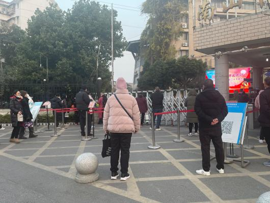
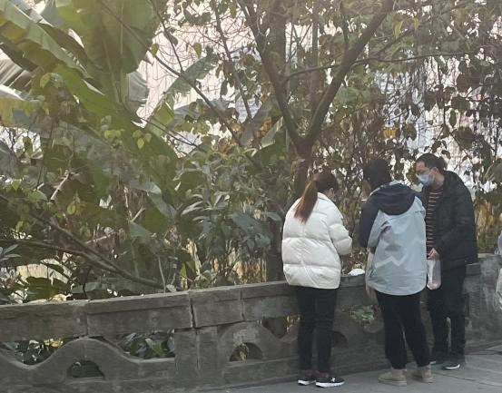

在四川，一群家长正在跨越群山大川
原始报道正文
在教育资源并不丰富且分布不平衡的四川，一座叫绵阳的城市凭借其优秀的教学质量与不算高昂的教育成本，吸引着一批又一批全川各地的家长。
四川盆地虽属南方，但冬季凭借潮湿的空气和跨越秦岭而来的北风，在这样的气候长时间处于室外仍是让人难以忍受。此时正值晚餐时间，提起四川省绵阳市都会想起的三所重点高中的高三学部校门外站满了家长，他们拎着保温盒，翘首以盼，望着校门口的方向。

图1 高三学部校门外等待的家长们
王燕也是“保温盒大军”中的一员。王燕并不是绵阳本地人，她的孩子在五年前通过绵阳的招生考试，成功从达州市小县城来到这所重点高中就读。“（她）初中就来绵阳念书，高三了嘛，怕学校吃不好，我在学校外面租了房子，来照顾她吃住，就盼着在高考时一哆嗦，哆嗦个更好的前程出来。”王燕说。

图2 王燕与丈夫为女儿送晚饭
2022 年四川的高考报名人数高达77 万，但四川的教育资源并不丰富，且分布极不平衡。四川省清北录取率排名前十的高中，有九所位于成都和绵阳两地，其中绵阳占三所。绵阳市这三大高中一本上线率分别都在95%以上，而四川整体一本上线率仅有13%。相较于成都市招收外地学生严苛的入学条件和高昂的学费开支，对外地家长而言，绵阳市的教育“低成本高收入”，是一个极具性价比的选择。
家长们为了让孩子有更高几率考取更好的大学，费尽心思希望孩子进入绵阳这几所高中就读；为了让孩子有更高几率被这几所高中录取，家长们又费尽心思让孩子进入绵阳市的中学就读，更有甚者在孩子小学时就将其送入绵阳的学校，一学年中只有寒暑假以及小长假能够回家与家人团聚。
然而为了防止这种类似“虹吸效应”的情况使四川省整体教育系统更加畸形，绵阳市教育局曾屡次出手，步步紧缩面向外地的招生计划，从小学到高中，条件逐渐严苛。于是在小学和初中的阶段，外地的学生和家长就已为了这些有限的名额展开了激烈的竞争。
王燕的孩子便是通过这种当地举行的考试拿到前往绵阳的门票。几年前的这场招生考试在饭店举行。饭店在达州县城算是高端饭店。大圆桌铺着平整的酒红色桌布，中间摆放着精致的假花。平日并不舍得来这里消费的家长此时仅需花费一百元，就能让自己的孩子坐在这里，不过面前本应摆放的佳肴美酒被替换成试卷，孩子们隔席而坐，为了能踏上去绵阳的求学之路而答题。
县里没有学校愿意为这批考生提供教室作为考场，这场考试是在私下由当地一家“补习机构”秘密举行，其负责人能与绵阳招生老师取得联系，并向绵阳点对点输送“优质生源”，俗称“点招”。
“绵阳的教育早就成为了一个产业。广撒网，各地掐尖，到处挖老师。”四川省达州市某中学的一名教师慨叹，“绵阳生源好，工资待遇和工作机会都多，大多数老师都想去那边教书吧？老师好，同学好，学习大环境好，然后更多的好学生想去那边读书吧？——这就是个循环。”
这种循环在十年前就已经出现。各学校为了招收更多、更优秀的学生，负责招生的老师被“下放”到各个城市乃至县城，为了提高效率，老师们与当地的培训机构取得联系，并通过培训机构联系到家长，为自己的学校进行宣传和游说。
在这种疯狂招生的状态下，绵阳学校外地生和本地生的比例一度达到持平甚至外地生更多的状况，寄宿学校一到周末班上至少有一小半的学生留校，老师们对此早已习以为常大面积招生的疯狂景象在六年前戛然而止，绵阳市教育局出手，大幅度缩减对外招生计划。然而政策并不能成为家长们的阻碍，“饭店中的考试”得以出现。
越来越紧张的名额和越来越激烈的竞争使得大约三年前家长们之间就流传着“绵阳将不再招收外地生”的传言。有的家长们开始未雨绸缪。然而并非所有家庭都能够有实力在另一座城市置办房产和解决户口，更多的家长寄希望于”秘密点招“、补习机构的“内定名额”、学校招生老师的内部渠道······然而一切不确定性在2022 年5 月成埃落定，绵阳市教育局宣布义务教育阶段将不再招收非绵阳户籍的学生，并收回各学校自主招生的权限。这意味着外地的学生们想要将绵阳这三大高中作为跳板，跃向更好的大学，将要面临更加激烈和残酷的竞争。
“小学初中不收外地的，那我就幼儿园把她送过去，我还就不信了。”一位四川省遂宁市的家长刘旭在饭桌上大声说。刘旭的大女儿正是通过前几年宽松的外地招生政策，在绵阳读完了小学和初中，如今正在绵阳一所高中就读。在刘旭的计划中，尚在襁褓中的二女儿将会沿着大女儿的道路再走一遍，如今也只能“另寻出路”。
没人说得清自己为何对绵阳教育近乎虔诚的信任，也没人厘得清何时对成绵以外城市的教育的信任土崩瓦解。家长们一边为教育局的“一刀切”政策感到愤懑，一边又惶惶不安地相互鼓励，相信着总会在政策下找到一条通向绵阳的路。
即便这条路要跨越群山大川。（本文中受访者姓名均为化名）